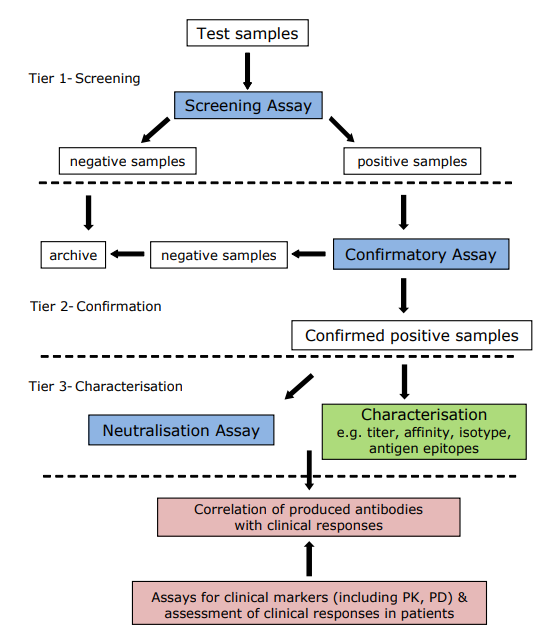

Immunogenicity assessment (2017)
Contents
Immunogenicity assessment (2017)#
if(False):
import sys
sys.path.insert(0, '..')
import myutil.pdf2txt
ns='che001_y2015_adj_covariates'
print(myutil.pdf2txt.fpdf2txt(ns, True, False))
else:
import pandas as pd
from IPython.display import Markdown as md
meta={
'title': 'Guideline on Immunogenicity assessment of therapeutic proteins',
'stage': 'adopted',
'url': 'https://www.ema.europa.eu/en/documents/scientific-guideline/guideline-immunogenicity-assessment-therapeutic-proteins-revision-1_en.pdf',
'year': 2017,
'docid': 'EMEA/CHMP/BMWP/14327/2006 Rev 1',
'keyword': [
'Immunogenicity', 'ADA'
]
}
md("\n".join("- **{}**: {}".format(k,v) for k,v in meta.items()))
title: Guideline on Immunogenicity assessment of therapeutic proteins
stage: adopted
url: https://www.ema.europa.eu/en/documents/scientific-guideline/guideline-immunogenicity-assessment-therapeutic-proteins-revision-1_en.pdf
year: 2017
docid: EMEA/CHMP/BMWP/14327/2006 Rev 1
keyword: ['Immunogenicity', 'ADA']
Table of contents
Executive summary
1 Introduction
2 Scope
3 Legal basis and relevant guidelines
4 Factors that may influence the development of an immune response against a therapeutic protein
4.1. Patient- and disease-related factors
4.2. Product-related factors
5 Potential clinical consequences of immunogenicity
5.1. Consequences on Efficacy
5.2. Consequences on Safety
6 Non-clinical assessment of immunogenicity and its consequences
7 Development of assays for detecting and measuring immune responses in humans
7.1. Strategy and Antibody Assays
7.2. Assay Controls and Reagents
7.3. Assay validation and interpretation of results
7.4. Assays for comparative immunogenicity
7.5. Immunogenicity assessment of conjugated proteins and fusion proteins
7.6. Characterization of antibodies to a therapeutic protein
8 Immunogenicity and Clinical Development
8.1. Rationale for sampling schedule and kinetics of the antibody response
8.2. Consequences on pharmacokinetics of the product
8.3. Impact of immunogenicity on safety and efficacy
8.4. Methodological aspects to assess relative immunogenicity as part of a comparability exercise
8.5. Management of immunogenicity
9 Pharmacovigilance
10 Summary of the immunogenicity program
Annex 1: An example of a strategy for immunogenicity assessment
Executive summary#
The number of proteins used as therapeutic agents is steadily increasing. In general, most adverse effects of therapeutic proteins are related to their pharmacological effects. One exception is the capability of inducing unwanted immune responses. This document is a revision of the Guideline on Immunogenicity assessment of biotechnology-derived therapeutic proteins (EMEA/CHMP/BMWP/14327/2006) on the basis of experience from marketing authorisation applications, scientific advices, and other new information. It includes, among others, more specific guidance for assays for immunogenicity, and integrated analysis of the clinical significance of immunogenicity. The risk of immunogenicity varies between products and product categories, on one hand, and between individuals and patient groups, on the other hand. In order to facilitate the risk assessment, the guideline contains a list of issues to be considered, a multidisciplinary summary of immunogenicity, including risk assessment that should be included in the marketing authorization application. This summary allows the justification of risk-based approach to immunogenicity which means that the extent and type of pre-authorisation immunogenicity studies and post-marketing risk management program are tailored according to the risk of immunogenicity and the severity of its potential or observed consequences.
From a regulatory point of view, the current predictive value of animal studies for evaluation of immunogenicity of a biological medicinal product in humans is low due to differences between human and animal immune systems and to immunogenicity of human proteins in animals. The development of adequate screening and confirmatory assays to measure immune responses against a therapeutic protein is the basis of the evaluation of immunogenicity. The Applicants need to demonstrate that the ADA assays are applicable for the demonstration of clinical correlations of ADAs.
The goal of immunogenicity studies is to investigate presence of an immune response to the therapeutic protein and its clinical impact. Thus, the evaluation of immunogenicity should be based on integrated analysis of immunological, pharmacokinetic, pharmacodynamic, as well as clinical efficacy and safety data. Immunogenicity issues should be further addressed in the Risk Management Plan (RMP).
Considering the scope of this guideline is wide, the recommendations will have to be adapted on a case-by-case basis to fit into an individual development program. Applicants should consider the possibility to seek Scientific Advice from European Medicines Agency (EMA) or from National Competent Authorities.
1. Introduction#
Therapeutic proteins are recognized by the human immune system. This recognition is often followed by an immune response to therapeutic proteins. This potentially harmful immune response is complex and, in addition to ADA formation, involves T cell activation and innate immune responses.
The consequences of an immune reaction to a therapeutic protein range from transient appearance of ADAs without any clinical significance to severe life-threatening conditions. Potential clinical consequences of an unwanted immune response include loss of efficacy of the therapeutic protein, serious acute immune effects such as anaphylaxis, and, for therapeutic proteins used for substitution, cross-reactivity with the endogenous counterpart.
Many patient-, disease-and product-related factors may influence the immunogenicity of therapeutic proteins. Patient-related factors that might predispose an individual to a particular type of an immune response include the genetic background, pre-existing immunity, immune status, including immunomodulating therapy. Treatment-related factors include dosing schedule and route of administration. Product-related factors that influence the likelihood of an immune response include the manufacturing process, formulation, and stability characteristics.
Depending on the immunogenic potential of the products containing a therapeutic protein and/or the rarity of the disease, the extent of immunogenicity data before approval might be limited. Controlled clinical trials are generally not suitable for the evaluation of rare adverse effects or slowly evolving immune reactions. Thus, further systematic evaluation of immunogenicity is often necessary after marketing authorization as a part of the risk management plan.
2. Scope#
The general principles adopted and explained in this document mainly apply to the development of an unwanted immune response against a purified therapeutic protein in patients and to a systematic evaluation of it. The guideline applies to proteins and polypeptides, their derivatives, and products of which they are components, e.g. conjugates. These proteins and polypeptides are mainly produced by recombinant or non-recombinant expression systems. Throughout this guideline, the term “therapeutic protein” is used.
This guideline does not apply to coagulation factors, vaccines, or heterogenous immunoglobulin preparations, such as human immunoglobulins purified from plasma.
3. Legal basis and relevant guidelines#
This guideline has to be read in conjunction with the introduction and general principles (4) and parts II and III of the Annex I to Directive 2001/83 as amended. This guideline should be read in conjunction with other relevant guidelines, e.g.:
Guideline on similar biological medicinal products containing biotechnology-derived proteins as active substance: non-clinical and clinical issues (EMEA/CHMP/BMWP/42832/2005 Rev. 1)
Guideline on Comparability of biotechnology-derived medicinal products after a change in the manufacturing process - non-clinical and clinical issues (EMEA/CHMP/BMWP/101695/2006)
Guideline on Immunogenicity assessment of monoclonal antibodies intended for in vivo clinical use (EMA/CHMP/BMWP/86289/2010)
Guideline on bioanalytical method validation (EMEA/CHMP/EWP/192217/2009 Rev.1 Corr.*)
ICH S6 (R1) Harmonised Tripartite Guideline on Preclinical Safety Evaluation of BiotechnologyDerived Pharmaceuticals
ICH Harmonised Tripartite Guideline on Comparability of Biotechnological/Biological Products Subject to Changes in their Manufacturing Process Q5E, 2004
Guideline on good pharmacovigilance practices (GVP): Product- or population-specific considerations II: Biological medicinal products (EMA/168402/2014) (EU-GVP P.II)
Guideline on good pharmacovigilance practices (GVP): Module V – Risk management systems (Rev 2) (EMA/838713/2011 Rev 2*) (EU-GVP Module V)
Guideline on good pharmacovigilance practices (GVP): Module VI – Management and reporting of adverse reactions to medicinal products (Rev 1) (EMA/873138/2011 Rev 1*) (EU-GVP Module VI)
Guideline on good pharmacovigilance practices (GVP): Module VIII – Post-authorisation safety studies (Rev 2) (EMA/813938/2011 Rev 2* Corr**) (EU-GVP Module VIII)
Guideline on good pharmacovigilance practices (GVP): Module XVI – Risk minimisation measures: selection of tools and effectiveness indicators (Rev 2) (EMA/204715/2012 Rev 2*) (EU-GVP Module XVI)
4. Factors that may influence the development of an immune response against a therapeutic protein#
5. Potential clinical consequences of immunogenicity#
The purpose of investigating immunogenicity of therapeutic proteins is to understand the clinical consequences; i.e. consequences for PK, PD, efficacy and safety. Factors which determine whether antibodies to a therapeutic protein will have clinical consequences, include, e.g., the epitope recognized by the antibody and the affinity and class of the antibody. In addition, the ability of immune complexes to activate complement may have an impact on the clinical outcome.
5.1. Consequences on Efficacy#
ADAs can affect efficacy of a therapeutic protein either by interfering with the pharmacodynamic interaction between the therapeutic protein and its target or by altering its pharmacokinetic profile.
When an ADA binds to or near the active site of a therapeutic protein or induces conformational changes, binding of the therapeutic protein to relevant receptors may be inhibited. These ADAs are usually designated as neutralising antibodies.
ADAs may change the exposure of the therapeutic protein by either increasing or decreasing clearance of the therapeutic protein. When exposure is decreased due to enhanced clearance, or increased, these ADAs are usually designated clearing antibodies or sustaining antibodies, respectively. ADAs induced against a therapeutic protein may have both neutralising and clearing or sustaining properties.
Usually, non-clearing, non-neutralising antibodies are expected to be associated with fewer clinical consequences related to efficacy. The effects of ADAs on therapeutic proteins may vary from zero to complete loss of efficacy.
Previous exposure to similar or related proteins resulting in pre-existing reactivity may modify the response to a new therapeutic protein (affect PK, efficacy, or safety).
Consequences of these antibodies could be severe for, e.g., patients receiving replacement products like blood clotting factors or enzyme replacement therapy, because the previous antibodies might cross-react with the newly introduced protein product, eliminating the effect. Therefore, potential cross-reactivity with pre-existing antibodies should be considered.
5.2. Consequences on Safety#
In general, most adverse effects of therapeutic proteins are related to their pharmacological effects. The main exception is that immune reactions may lead to adverse effects. Immune-based adverse effects may be both acute and delayed.
Less severe immune-based adverse effects include injection-site and infusion reactions. Non-allergic (not involving IgE-generation) infusion reactions are typically seen during the first infusions and can be mitigated by appropriate pre-medication.
Hyperacute / acute reactions#
Acute infusion-related reactions including anaphylactic/anaphylactoid reactions (type I), may develop within seconds or during a few hours following infusion.
All acute infusion reactions are potentially related to an immune response. While some are allergic (anaphylactic) in nature and usually are mediated by immunoglobulin E (IgE); others (anaphylactoid) are not true allergic reactions, but the clinical manifestations maybe the same. Acute reactions can cause severe hypotension, bronchospasm, laryngeal or pharyngeal oedema, wheezing and/or urticaria. Pre-existing immunity may modify safety of a therapeutic protein; e.g. result in increased incidence and/ or severity of hypersensitivity reactions.
Delayed reactions#
In addition to acute reactions, delayed type (T cell-mediated) hypersensitivity and immune complexmediated reactions have to be considered. The risk of such reactions may be higher with an increasing drug free interval or when therapies are repeatedly switched among members of a product class. Delayed hypersensitivity reactions should be clearly distinguished from infusion-related reactions. Applicants should ensure the systematic collection of non-acute clinical sequelae following application of the therapeutic protein. Clinical signs can include myalgia, arthralgia with fever, skin rash, and pruritus.
Autoimmunity: Cross-reactivity to an endogenous counterpart#
A possible life-threatening clinical consequence of ADA formation against a therapeutic protein is crossreactivity with an endogenous protein when this protein has a non-redundant role in key physiological functions. For example, ADAs cross-reacting with endogenous erythropoietin have caused pure red cell aplasia in epoetin alfa-treated patients with kidney failure. ADAs against novel constructs (e.g. fusion proteins containing physiological functional molecules), should be investigated for cross-reactivity with relevant endogenous proteins.
6. Non-clinical assessment of immunogenicity and its consequences#
Therapeutic proteins show species differences in most cases. Thus, human(ised) proteins will be recognized as foreign proteins by animals. For this reason, the predictivity of animal studies for evaluation of immunogenicity in humans is considered low. Non-clinical in vitro or in vivo studies aiming at predicting immunogenicity in humans are normally not required.
However, ongoing consideration should be given to the use of emerging technologies (novel in silico, in vitro and in vivo models), which might be used as tools during development or for a first estimation of risk for clinical immunogenicity. In vitro assays based on innate and adaptive immune cells could be helpful in revealing cell-mediated responses.
Immunogenicity concerns may arise from the presence of impurities or contaminants. It is preferable to rely on purification processes to remove impurities and contaminants rather than to establish a preclinical testing program for their qualification. It is expected that clinical studies where immunogenicity is evaluated are supplied with material sufficiently representative of the medicinal product that is going to be placed on the market.
Measurement of anti-drug antibodies in animal studies may be needed as part of repeated dose toxicity studies, in order to aid in the interpretation of these studies (as discussed in “ICH S6 (R1) Harmonized Tripartite Guideline on preclinical safety evaluation of biotechnology-derived pharmaceuticals.”). When ADA measurement is not part of the study protocol, blood samples should be taken and stored for future evaluations when warranted to aid in interpretation of the study results. The assays used should be validated. In toxicology studies, where usually higher concentrations of therapeutic protein are present in the samples, the interference of the therapeutic protein in the ADA assays needs to be considered. Generally, there is no need for immunogenicity assessment in single dose toxicity studies. However, for a single dose pharmacokinetic study measurement of ADA could be relevant.
An immune response to a therapeutic protein representing a counterpart to an endogenous protein may result in cross-reactivity, directed to the endogenous protein in cases where endogenous protein is still produced. Usually, safety risks would be predictable, based on existing knowledge on the biological functions of the endogenous protein and animal studies would not be required to confirm these safety risks. Only in absence of sufficient knowledge, and if theoretical considerations are suggestive of a safety risk, animal immunization studies with the therapeutic protein or the animal homolog may be considered in order to gain information on the potential consequences of an unwanted immune response. Any relevant experience on the consequences of induction of an immune response to the endogenous protein or its absence/dysfunction in animal models should be discussed in the integrated summary of immunogenicity.
Both humoral and cellular immune responses should be considered. Cellular responses may be relevant when pharmacodynamic or adverse effects are (suspected to be) mediated by immune cells, e.g. when delayed type hypersensitivity occurs or when a cytotoxic T-cell response is suspected.
In the development of similar biological medicinal products (biosimilars), the comparison of the antidrug antibody response to the biosimilar and the reference product in an animal model is not recommended as part of the biosimilar comparability exercise, due to the low predictivity for the immunogenicity potential in humans. However, when in rare occasions there would be a need for a toxicology study or when a pharmacokinetic study is performed there still could be a need to measure ADAs to aid in interpretation of the study results.
7. Development of assays for detecting and measuring immune responses in humans#
Developing an integrated analysis strategy relevant for the intended treatment plan is critical for elucidating the clinical relevance of immunogenicity data. The assays and assay strategies for assessment of immune responses should be selected and/or developed before the clinical development. While most effort is usually focused on antibody detection and characterization as this is often related to clinical safety and efficacy, cell-mediated responses are also important and their assessment should be considered by applicants, where applicable.
Although assays will be refined during product development and assay suitability reassessed as per their use, the applicant is expected to provide all necessary information and full assay validation data for assessment as part of the marketing authorization (MA) application.
7.1. Strategy and Antibody Assays#
An appropriate strategy which includes use of sensitive and valid methods for immunogenicity assessment is expected. Typically, a multi-tiered approach should be employed. This includes a screening assay for identification of antibody positive samples/patients, a procedure for confirming the presence of antibodies and determining antibody specificity followed by functional assays for the assessment of the neutralizing capacity of antibodies. Any deviation from this concept should be properly justified and discussed with regulatory authorities before submission of the MA application. All key assays (screening, confirmatory, NAb) need to be validated for the intended use. In some cases, testing samples for cross-reactivity with other products based on the same protein and the endogenous protein may be necessary, if it has implications for clinical efficacy and safety.
Technologies for antibody measurement are rapidly evolving which needs to be considered during assay selection. In addition, assays for measuring the level of the product and for assessing clinical relevance to products e.g., assays for relevant biomarkers or pharmacokinetic measurements are required to evaluate the clinical impact of induced antibodies if these are detected (see Annex 1).
If antibodies are induced in patients, evaluation of the kinetics of antibody development and the duration as well as the magnitude of the antibody response should be addressed, as it may correlate with clinical consequences. In such cases, serum or plasma samples should be characterized in terms of antibody level (titre), neutralizing capacity and possibly other criteria determined on a case-by-case basis according to the biological product, the type of patients treated, the aim of the study, clinical symptoms and possibly other factors. Further characterization if required should include e.g., antibody class and subclass (isotype), affinity and specificity and assays used for these should be qualified for their intended purpose.
Screening assays#
Screening assays are the first step in immunogenicity evaluation. They should be sensitive and capable of detecting all clinically relevant antibodies (including IgM and IgG subclasses) induced against the product in all antibody positive patients. A low false positive rate is desirable (preferably 5%) but false negative results are unacceptable.
Screening is performed using immunoassays which are based on a variety of formats and detection systems (see Annex 1). All screening procedures are based on detection of antigen-antibody interaction (binding) but may differ in their underlying scientific/ technical principles. These assays are configured to have sufficient throughput and appropriate automation, each assay has its own attributes and inherent limitations which need to be considered (see chapter 10; Annex 1).
Assays need to be developed, optimized, selected and validated according to their intended use. When selecting the screening assay, all methodological issues and confounding factors likely to impact the testing should be taken into account. For example, direct binding ELISAs, with antigen directly immobilized on plate well surfaces are often the simplest assay approach, but may be associated with a very high incidence of false positivity. They may also be associated with a high incidence of false negatives for samples containing low affinity antibodies. It is often necessary to consider other suitable assays, e.g. bridging assays, electrochemiluminescence based assays or surface plasmon resonance methods while recognizing their limitations. Epitope masking can give false negative results in some screening assays and a strategy to avoid this may be necessary e.g. by labelling detecting reagents using procedures that avoid masking of particular epitope(s).
Assay reagents (e.g. blocking reagents) should be considered carefully. Blocking reagents like BSA and milk contain non-human glycans that are sometimes found on proteins produced in non-human animal cells. Thus, antibodies against these glycans may be missed.
Samples (normally serum or plasma) contain substances that may interfere with the assays i.e. matrix effects which produce false positive or negative results and/or incorrect assessment of antibody content. Examples include complement components or complement receptors, mannose binding protein, Fc receptors, soluble target molecules, and rheumatoid factors. The influence of such matrix components on assay results should be considered and assessed as part of method validation. To mitigate the potential influence corrective measures should be implemented and the chosen approach should be justified, especially if there are limitations of the respective methods.
Additionally, residual therapeutic protein (drug) present in patients’ blood can complex with induced antibody and hence reduce the amount of antibody detectable by assays. This interference may affect assays differently, depending on the assay format or type and the antibody characteristics and should be addressed during method validation. If such drug interference occurs, it may be circumvented/resolved by using a number of approaches e.g. by dissociating the immune-complexes with acid, removing excess drug by solid-phase adsorption, use of long incubation times and/or using an assay which allows sufficient sample dilution to avoid this problem. Sometimes, it may be possible to remove drug or target from the sample using lectins or xenogeneic antibodies. Such approaches must themselves be validated for effectiveness and shown to have no negative impact on analysis results. In some cases, the interference from residual therapeutic protein can be overcome by appropriate spacing of the timing between administration of product and sampling for antibody assessment i.e. allowing time for the product to be cleared from the circulation before sampling. This latter approach must not compromise the detection of antibodies or the treatment of the patient.
In any case, the Applicant has to demonstrate that the tolerance of the assay to the therapeutic exceeds the levels of the therapeutic protein in the samples for ADA testing. Due to technical limitations it may not be always possible to develop fully tolerant assays. If this occurs, the best possible assay should be employed and the approach taken should be properly justified.
Assays for confirming the presence of antibodies#
Confirmatory assays are expected for confirming the positive results and eliminating any false positive results following the initial screen. Assay selection should take account of the limitations and characteristics of the screening assay. A common approach for confirming antibodies is addition of an excess of antigen to the sample followed by a comparison of spiked and unspiked samples in the screening assay. This should result in inhibition of the initial binding of the antibodies to the antigen and in a reduction of positive signal for true positives in the spiked sample.
Antibodies present in confirmed positive samples need to be examined for titer and specificity for the therapeutic protein. It has been shown that antibodies can be induced also against other substances, like product-related and process-related components (e.g. host cell proteins). In such cases it is expected that antibody assays against these impurities are also developed and validated for testing of the patient samples although the levels of the impurities should be kept at a minimum to avoid such immune responses.
Neutralization assays#
The neutralizing capacity of antibodies present in positive samples needs to be evaluated as part of the immunogenicity assessment since this often correlates with diminished clinical responses to biological product. Deviation from this concept needs a strong justification. In such cases, it is advisable to seek regulatory advice. Neutralizing antibodies (NAbs) inhibit the biological activity of a therapeutic protein by binding to epitope(s) within or close to the active site(s) of the molecule or by causing conformational changes. Because NAbs can trigger clinical effects, specific and sensitive in vitro methods are expected for detection. Two types of NAb assays are mainly used - cell-based assays and non-cell-based assays.
Selection of an assay which responds well to the biological product and is tolerant to residual therapeutic protein is recommended. Bioassays used for potency testing can often be adapted to assess neutralizing antibodies. However, they may require refining in order to perform optimally for measuring the neutralizing capacity of antibodies.
Understanding the mode of action, the target and effector pathways of the therapeutic is critical for identification of a suitable NAb assay format. Additionally, the risk of developing NAbs and the impact on clinical sequelae also needs to be considered. While cell-based assays are often employed for agonistic therapeutics, non-cell-based competitive ligand binding assays (CLB) assays are often considered for antagonistic molecules with humoral targets. For products that exert their activity only through direct binding to other molecules (e.g., some MAbs), CLB or other alternatives may be suitable. However, when these are used it must be demonstrated that they reflect neutralizing capacity/potential in an appropriate manner. For antagonists such as monoclonal antibody therapeutics with effector functions for clinical efficacy, cell-based assays are recommended as the mechanism of action cannot be adequately reflected in a non-cell-based CLB assay.
For NAb assessment, a single concentration of the biological is often chosen for the assay and dilutions of each sample assessed for their inhibitory effect on the assay response. This allows a neutralizing dose response to be determined and calculation of neutralizing capacity (‘titre’) for each sample.
As for screening, it should be shown during the method validation that the neutralization is truly related to the antibodies and not due to other inhibitory components in sample matrix. Approaches for showing specificity such as antibody depletion or the use of alternative stimuli (if assay responds to multiple stimuli) can be considered. It should be noted that neutralizing activity does not necessarily correlate with binding of the antibody, i.e. samples containing significant or high amounts of binding antibodies may fail to neutralize biological activity whereas samples containing lower amounts of binding antibodies may be able to neutralize variable (sample dependent) amounts of the drug. This may depend on product, but must be determined through studies.
Immunogenicity Assessment strategy - design and interpretation#
Immunogenicity studies need to be carefully and prospectively designed to ensure all essential procedures are in place before commencement of clinical assessment. This includes the selection, assessment, and characterization of assays, identification of appropriate sampling points including baseline samples for determination of pre-existing antibodies, adequate sample volumes and sample processing/storage and selection of statistical methods for analysis of data.
This applies to assays used to measure and characterize antibodies and to methods employed for assessing clinical responses to antibodies if they are induced. Much of this needs to be established on a case-by case basis, taking account of product, patients, and expected clinical parameters.
7.2. Assay Controls and Reagents#
The identification and/or development of appropriate positive and negative controls is crucial as they are essential for assay validation. They are intimately associated with assay interpretation and for distinguishing antibody positive from antibody negative samples. For all controls the characterization data showing their properties and functionality for the intended use should be provided as part of the MAA submission. This is especially important for positive controls, which in many cases are animal antibodies and binding to different epitopes e.g. in case of biosimilars may differ.
Ideally, an antibody positive control should be a human preparation with a significant antibody content which is available in sufficient quantity for continued use. However, sufficient human serum is often not available to serve as a positive control preparation. In such cases, recombinant human antibodies against the protein, if available, or animal serum raised against the product as a reference can be used. This is also applicable to biosimilar products. However, the use of animal antibodies is more limited than human antibodies e.g. in immunochemical procedures due to species differences. Additionally, if the assay involves the use of an anti-human immunoglobulin reagent, the assay will not reliably respond to non-human antibodies and the response in all assays may differ in characteristics from responses to human antibodies in human samples.
Use of the positive control for estimating antibody levels for data obtained for samples with binding assays in mass units is problematical as the immunoglobulin present in standards and samples is heterogeneous in structure, specificity and avidity. Thus other options should be explored, e.g. to report immunoassay data as a titre based on a standard procedure for calculating this value. However, assay sensitivity and data for spiking recovery experiments should be presented in a quantitative manner. The positive control antibodies for neutralization assays should have significant neutralizing activity, but it may be also useful to include a non-neutralizing antibody preparation in assays, at least in validation studies, if available. The neutralizing capacity of the antibodies in each sample is difficult to define in mass units and normally, a threshold for the neutralizing activity of the assay is determined. Such thresholds (close to the minimal detection limit) should be properly justified and validated to ensure all NAb positive samples are detected. Using the sample dilution or titre required to neutralize the biological activity of the product is also an option.
For both screening and NAb assays, a panel of reference materials that contain different amounts of antibodies (low, medium and high quality controls) are useful for characterizing/validating assays as they act as assay performance indicators. This should include one or more preparations with low antibody content (close to the minimal detection limit) and containing low avidity antibodies, if possible.
Negative controls are needed to establish assay baselines and characterize/validate the assays. Assay baseline for normal (healthy) individuals is clearly fairly easily determined by measuring the assay response using samples derived from an appropriate number of such individuals and analysing this to provide a statistically valid background value. However, this may not be representative of the baseline response of samples derived from the patient population, which would therefore need to be established separately, using pre-treatment samples from patients or drug naïve disease patients. Overall, the assays should be validated using the same matrix as the samples to be analysed.
Some individual’s/patient’s samples may contain pre-existing (pre-treatment) antibodies or possibly other substances which produce significant positive responses in assays, and so screening patients for this is necessary to ensure that post-treatment data can be interpreted correctly in terms of treatment emergent antibodies.
Reagents used in assays need to be qualified and acceptance criteria set, at least for those which are most important. They should be stored appropriately (lyophilized or frozen at a suitable temperature) and characterized.
7.3. Assay validation and interpretation of results#
Assays used for analysis of ADAs and NAbs from the patient samples need to be validated for their intended purpose and the validation data should be provided as part of MA application. For the validation, the Guideline on validation of bioanalytical methods (EMEA/CHMP/EWP/192217/2009 Rev.1 Corr.\(*\)) should be consulted. While assay development and validation is an ongoing process, all clinical immunogenicity data to be considered for a MAA should have been obtained using validated assays.
Validation studies must be conducted to establish that the assays show appropriately linear, concentration dependent responses to relevant analytes as well as appropriate accuracy, precision, sensitivity, specificity and robustness. Inclusion of data supporting minimal required dilution of samples is important. The use of a central laboratory to perform the assays should be considered to avoid inter-laboratory variability, which is an issue both for pre-MAA and post-approval testing. Assays must also be validated to show that matrix effects caused by reagents or substances present in samples or drug interference do not adversely affect the results obtained. This is normally addressed by ‘recovery’ investigations conducted by observing the effects of such substances present in the matrix on the response obtained in their absence. This needs to be investigated for the full range of dilutions of samples, which are to be used in assays, and, at least in some cases, limits the dilutions, which can be validly assessed.
It is essential to establish clear criteria for deciding how samples will be considered positive or negative, and also how positive results will be confirmed. The approach taken should be justified by data. A common procedure for establishing positive cut-off for immunoassays is to establish assay background using samples from normal healthy controls or diseased individuals (see above). A statistical approach could be used to establish the assay cut-off value, where justified. Alternatively, real data (e.g. double background value) can be used to determine what will be considered the lowest positive result. For antibody positive samples, a titre needs to be determined using a standard approach and reporting the reciprocal of the highest dilution at which the sample gives a positive result. Another option is to report in mass units using a positive antibody control but this has caveats as explained above.
7.4. Assays for comparative immunogenicity#
Comparative immunogenicity studies are always needed in the development of biosimilars (see Guideline on similar biological medicinal products containing biotechnology-derived proteins as active substance: non-clinical and clinical issues, EMEA/CHMP/BMWP/42832/2005 Rev1) but rarely for a change of the manufacturing process of a given biological product (for changes to the manufacturing process of the drug substance see ICH Harmonised Tripartite Guideline on Comparability of Biotechnological/Biological Products Subject to Changes in their Manufacturing Process Q5E, 2004).
Immunogenicity testing of the biosimilar and the reference product should be conducted within the biosimilar comparability exercise by using the same assay format and sampling schedule. The assays should preferably be capable of detecting antibodies against all epitopes of both biosimilar and reference molecule. If separate assays are used for the biosimilar and the reference product, this twoantigen assay approach requires careful validation to exclude any bias due to differences in sensitivity and drug tolerance. Demonstration of similar incidence of ADAs and a good concordance between the assays provides good evidence for a comparable immunogenicity.
Alternatively, the Applicant may use a single assay approach in which the biosimilar molecule is used as antigen. In principle, this assay format should be able to detect all antibodies to the biosimilar product but not necessarily all antibodies to the reference product. The finding that the biosimilar is more immunogenic should trigger an investigation of the root cause of the difference, including the methodological issues.
Regardless of the approach used for immunogenicity assessment of a biosimilar product versus the reference product, it is recommended that the assays are cross-validated using both antigens, antibody positive controls and preferably clinical samples to demonstrate similar performance.
The same considerations about the assay methodology apply when comparative immunogenicity studies are required for comparison of two versions of a therapeutic protein in the context of a manufacturing change of a given product.
7.5. Immunogenicity assessment of conjugated proteins and fusion proteins#
Elicitation of an antibody response with multiple specificities and variable affinity towards different epitopes resulting in varying degrees of clinical impact is expected for novel biotherapeutic molecules such as engineered fusion proteins and chemically conjugated proteins. The evaluation of this response, in particular, the characterization of the specificity of the induced antibodies is challenging and may require multiple assays for measuring immune responses to various moieties. Alternatively, a strategy based on the competitive inhibition principle of the confirmatory assay to dissect the specificities of the antibodies to individual moieties can be used. For example, for a pegylated protein, the assessment strategy would comprise a screening assay using the pegylated therapeutic and testing of any positive samples using the whole therapeutic, the non-pegylated protein and the polyethylene glycol (PEG) moiety in a confirmatory assay.
7.6. Characterization of antibodies to a therapeutic protein#
Normally, the incidence and titre, persistence and neutralizing capacity of the ADAs are required. In certain circumstances, it may be feasible to further characterize the ADA response, e.g., in case of anaphylactoid reactions and follow up of the maturity of emerging immune response. In these cases, determination of the isotype and IgG-subclasses or even T cell reactivity may be useful. Crossreactivity of the ADAs with relevant endogenous proteins should be investigated if emerging autoimmunity is suspected.
8. Immunogenicity and Clinical Development#
Testing of immunogenicity should be included in all pivotal clinical pharmacokinetic, pharmacodynamics, safety, and efficacy trials of a biological medicinal product targeting patient populations that have not been exposed to the product previously. The aim of immunogenicity studies is to detect and characterize an immune response to the product and to investigate correlations between ADAs, on one hand, and pharmacokinetics and –dynamics as well as efficacy and safety, on the other hand. Therefore, assessment of immunogenicity should be included in the planning of the pivotal clinical trials, including the synchronization of sampling for ADAs and relevant biomarkers, if available, as well as evaluation of efficacy and safety (see chapter 10).Special clinical immunogenicity studies are generally not needed.
8.1. Rationale for sampling schedule and kinetics of the antibody response#
Immunogenicity should be systematically tested in patients by scheduled routine repetitive sampling as well as in a symptom-driven manner with additional samples, when the occurrence of an unwanted immune response is suspected.
Several product-related factors will influence the development of an immune response against a therapeutic protein (see chapter 4). Therefore, the sampling schedule for detection of an immune response should be adapted and applied individually for each product, also taking into account its pharmacokinetics (e.g. elimination half-life) and the drug tolerance of the ADA-assay(s). Baseline samples should always be collected.
Applicants should use generally accepted terminology in describing the kinetics of the ADA response and potential immune-mediated adverse effects taking into account the experience of comparable products and relevant regulatory and scientific publications (see also chapter 10). During treatment, samples should be taken before administration of the product, since residual levels of the active substance in the sample can interfere with the assay (see chapter7).
The frequency of sampling and the timing and extent of analyses will also depend on the risk assessment for a particular drug (as described in the summary of immunogenicity program, chapter 10). Sampling schedules should be designed to distinguish patients being transiently positive from patients developing a persistent antibody response. The post-treatment sampling period should be long enough to allow conclusions on the persistence of the immune response triggered by the therapeutic protein and uncover an immune reaction that was suppressed by the therapeutic protein itself. The timing of post-treatment sample(s) is determined by the half-life of the protein and the drug tolerance of the ADA assay
More frequent sampling is necessary in the earlier phase of treatment, where patients are normally most at risk of ADA development. Long-term follow up of immunogenicity with less frequent sampling gives additional information on the evolution and consequences of immunogenicity. In case of continuous chronic treatment, immunogenicity data for one year of treatment should normally be available pre-authorisation but shorter follow up is possible with a proper justification.
The immunogenicity associated with intermittent treatment should be considered on the basis of a risk assessment, e.g. experience from other similar products, risks associated with potential immunogenicity, boosting effect, and persistence or appearance of antibodies after the exposure. If the product has different routes of administration, Applicants should justify their approach as regards immunogenicity assessment for each route at the time of Marketing Authorisation Application (see summary on immunogenicity program).
The risk of immune-mediated adverse effects should be described in the relevant chapters of the Summary of Product Characteristics (SmPC) in a concise way and taking account the fact that a comparison of results from different sources and or by different assays is unreliable. The feasibility of and possibilities for routine monitoring of immunogenicity, including the usefulness of drug concentration measurements, should also be included in the SmPC, if applicable.
8.2. Consequences on pharmacokinetics of the product#
ADAs can influence pharmacokinetics, especially the elimination phase. Non-neutralizing, “binding” antibodies, may sometimes also modulate rather than just decrease, the efficacy of a product e.g. by prolonging the half-life. A change in pharmacokinetics may be an early indication of antibody formation. Thus, the Applicants are encouraged to incorporate concomitant sampling for both pharmacokinetics and immunogenicity into all repeat dose studies.
8.3. Impact of immunogenicity on safety and efficacy#
The presence of ADAs may or may not have clinical consequences (see Chapter 5). It is essential that the clinical development is based on an analysis of potential risks and possibilities to detect and mitigate them. The planning of the analysis of immune-mediated adverse effects should be based on risk analysis, including previous experience of the product (class), presence of potentially immunogenic structures in the protein and patient population (see summary of immunogenicity studies, Chapter 10). Patients with pre-existing ADAs may exhibit a different efficacy and safety profile and should be analysed as a subgroup when feasible. The analysis plan should define symptom complexes that might be associated with acute or delayed hypersensitivity and autoimmunity as well as with the loss of efficacy (see chapter 10). Potential immunological adverse effects should be addressed in the risk management plan (see chapter 9).
When ADAs have been demonstrated, further characterization beyond the titre and neutralizing capacity of the antibodies may be useful, e.g. immunoglobulin class in case of acute hypersensitivity. It may also be possible to do further typing of clinically important ADAs or to determine a “threshold” level of ADAs beyond which there is a significant impact on efficacy and/or safety.
8.4. Methodological aspects to assess relative immunogenicity as part of a comparability exercise#
Head-to-head comparative immunogenicity studies are required in the development of biosimilar products (Similar biological medicinal products containing biotechnology-derived proteins as active substance: non-clinical and clinical issues, EMEA/CHMP/BMWP/42832/2005 Rev. 1)and may also be needed after changes to the manufacturing process of a given product to compare the pre- and postchange versions of the product(see 7.4). When changes to the manufacturing process of an individual product are made, the comparability exercise is a stepwise process (see ICH Q5E). If the initial physicochemical and biological testing indicates a difference between the pre- and post-change versions of the product, the potential consequences to safety and efficacy need to be considered, including altered immunogenicity. The type of immunogenicity studies, if required, should be justified on the basis of the observed difference(s), route of administration, dose-response curve and therapeutic window, the potential clinical impact, and knowledge gained with this product and product class before (see ICH Q5E). Immunogenicity evaluation as part of a clinical trial for a comparability exercise in the context of a manufacturing change should preferably involve head-to-head study of pre- and post-change product. In both scenarios, biosimilar development and a change to the manufacturing process, the target population of the efficacy, safety and immunogenicity study needs to be sensitive for differences in immunogenicity and its consequences and be representative for the population(s) for whom the product is indicated. In high risk situations, the samples should be analyzed on an ongoing basis.
The investigation of immunogenicity should be integrated with the pharmacokinetic, safety, and efficacy testing.
Differences in immunogenicity will question the comparability of a biosimilar and its reference product as well as of new and old versions of an approved product, and thorough root cause analysis is warranted. Minor differences in immunogenicity without correlate at quality level and without negative impact on clinical efficacy (reduced or loss of efficacy) and safety might be acceptable. The evaluation of the clinical impact of an observed difference in immunogenicity may be challenging because of the limited sample size and duration of the follow up. If the clinical impact of the observed difference is uncertain, e.g. due to the rarity of the potential serious adverse effect or the slow evolution of an immune response, a specific risk management strategy and an update of the risk management plan (see chapter 9) may be required.
8.5. Management of immunogenicity#
A harmful immune reaction to a therapeutic protein cannot always be avoided in spite of the efforts by the Applicants to select compounds that have a low immunogenic potential (see chapter 6). In such cases, the Applicant should, if feasible, explore possibilities to reduce the adverse impact of immunogenicity observed during the clinical development. In some cases, immunosuppressive or antiinflammatory co-medication may significantly prevent or reduce immunological adverse effects. In some cases, as with coagulation factors, it may be possible to re-establish the immunological tolerance by tolerisation regimens, e.g. by administration of larger doses of the therapeutic protein. Such therapeutic regimens should be documented by clinical studies. Applicants should provide guidance to the prescriber as part of the Summary of Product Characteristics on how to mitigate the effects of immunogenicity.
9. Pharmacovigilance#
As part of the application for marketing authorisation, the applicant should present a risk management plan (RMP) in accordance with current EU legislation and pharmacovigilance guidelines (see EU-GVP Module V). Immunogenicity must be considered for the safety specification section of the RMP of therapeutic proteins and, if included, the need for additional pharmacovigilance activities should be evaluated. For changes in the manufacturing process, implications of this change on the immunogenic potential might have to be addressed in the RMP. Again, it should be emphasised that evaluation of immunogenicity is a multidisciplinary approach, at best providing input of quality, non-clinical and clinical experts.
The extent of data on immunogenicity that can and needs to be obtained during the clinical development programme of a therapeutic protein before approval depends on the event rate and associated risk driven both by the immunogenic potential of the protein in the patient population(s) to be treated and the rarity of the disease. The availability of data on immunogenicity at time of marketing authorisation might, therefore, be limited. In addition, knowledge obtained for the product class and/ or the reference product (in the case of biosimilar development) should be fully evaluated in the relevant sections of the summary of clinical safety based on the available evidence with appropriate conclusions drawn on whether or not a product may pose such an important (potential) risk. If this is the case, immunogenicity should be included in the RMP as either a potential or identified risk or as an area of missing information. Immunogenicity should always be related to the clinical consequence. If no particular concern or uncertainty arises from the evaluation, inclusion by default of immunogenicity as a potential risk or as an area of missing information is not required.
Within the pharmacovigilance plan of the RMP, the need for additional pharmacovigilance activities should be evaluated and assessed. In case additional studies on immunogenicity are considered necessary the most suitable design should be evaluated based on the aim of the study. At this moment, ADAs and trough levels are not routinely measured in clinical practice. Therefore, in order to obtain additional data on the incidence and titres of ADAs and trough levels, additional clinical trials or extensions of ongoing clinical trials in the post-authorisation phase might be necessary. Such a trial might also be necessary during biosimilar development in case additional immunogenicity data should be collected in a comparative manner in the post-authorisation phase.
Follow-up of patients treated with a therapeutic protein during routine clinical practice, e.g. by means of patient registries (see EU-GVP Module VIII), and collection of spontaneously reported suspected adverse reactions (see EU-GVP Module VI) has been shown to be a valuable tool to collect data on the safety of these products. These pharmacovigilance tools can also be used for the identification of adverse events related to immunogenicity, e.g. infusion related reactions and pure red cell aplasia with erythropoietins. Based on data from these sources, it is important to conclude on potential unwanted immune responses based on suspicious safety and/ or (loss of) efficacy signals, including changes in relevant biomarkers, which should be discussed in the RMP.
If immunogenicity is included in the safety specification section of the RMP the need for additional risk minimisation activities should be discussed and, if considered needed, these activities should be described (see EU-GVP Module XVI). Routine risk minimisation activities related to immunogenicity might, among others, consist of guidance in the summary of product characteristics how to measure ADAs and trough levels and how to deal with the development ADAs and related adverse events. Identification of the product and batch number suspected to cause an adverse reaction, traceability, is important for therapeutic proteins. This is especially important for adverse events related to immunogenicity, whether detected through routine pharmacovigilance and/or additional pharmacovigilance activities. Appropriate measures to improve traceability, in particular collection of brand name and batch number, should be taken (see EU-GVP P.II).
10. Summary of the immunogenicity program#
Both the planning and the evaluation of immunogenicity studies of a biological product are multidisciplinary exercises. Data that are relevant to the assessment of immunogenicity are dispersed to numerous locations of the marketing authorization application. Therefore, it is recommended that sthe applicant will include an integrated summary of immunogenicity in the application, including a risk assessment to support the selected immunogenicity program. It is recommended that this summary is placed in chapter 2.7.2.4 Special Studies or, if more detailed, in chapter 5.3.5.3 of the CTD. The summary should be concise and contain links to the appropriate chapters of the application. This summary with risk assessment can evolve through the lifecycle of the product and may be used to support applications at various steps of product development.
The risk assessment may suggest a low risk of immune-mediated adverse effects. Nevertheless, it is expected that immunogenicity is studied with validated assays according to the scheme in Annex 1.Deviation from this scheme, e.g. omission of the testing for neutralizing ADAs, e.g.in case of singledose clinical trials for low-risk therapeutic proteins, must be justified. The risk assessment may have an impact on additional characterization of the immune response (e.g. isotyping and epitope mapping), frequency of sampling, timing of the analysis, and selection of the target population. The summary should include the following topics when applicable:
Analysis of risk factors
1 Previous experience of the product/product class
a. does the product have an endogenous counterpart
b. do animal models provide useful data of potential consequences of immunogenicity (e.g. elimination of an endogenous protein)
c. are there known antigenic sites of the molecule
d. attempts to reduce the immunogenicity of the product before and during clinical trials
2 Physicochemical and structural aspects
a. Are there new potentially immunogenic structures, e.g. sequences that are foreign to human
b. Expression construct and the posttranslational profile e.g. non-human glycosylation patterns/glycans
c. Stability and impurities (e.g. presence of aggregates (as visible or sub-visible particles)
d. Formulation and packaging, e.g. potential impurities and leachables
3 Does the route and/or the mode of administration raise concerns
4 Patient- and disease-related factors
a. State of the immunological tolerance
i. prone to autoimmune reactions
ii. lack of immunological tolerance, e.g. defects in genes coding for endogenous proteins
iii. concomitant immunomodulative therapy
b. Pre-existing immunity
i. “natural” antibodies
ii. Antibodies due to previous therapy with related substances
The risk-based immunogenicity program
5 Assay strategy
a. Rationale for the choice of assays
i. screening, confirmation, and titration
ii. neutralizing
iii. other, e.g. immunoglobulin class, sub-class
b. Specificity and sensitivity of the selected assays in the context of the particular product
i. selection of the positive control(s)
ii. determination of the threshold for ADA-positivity
c. Drug and target tolerance of the assay
d. Matrix interference in different populations
6 Approach to immunogenicity in clinical trials
a. Sampling for immunogenicity testing
b. Justification for the length of the follow up
i. on-treatment
ii. off-treatment, post-exposure
c. Pharmacokinetics
i. Possible ADA-interference on the assays of product concentration
ii. Drug trough levels in relation to drug tolerance of the ADA assay
d. Pharmacodynamics, efficacy and safety trials
i. how the program aims to reveal the incidence, persistence and clinical significance of potential ADAs
ii. hypersensitivity, autoimmunity, loss of efficacy
1 definitions and symptom complexes ^1
^1 The Applicant should systematically use terminology and definitions to characterise the type of ADA responses (persistent, transient) and potentially immune-mediated symptoms according to relevant publications (e.g.
Kang P and Saif M. Infusion-Related and Hypersensitivity Reactions of Monoclonal Antibodies Used to Treat Colorectal Cancer—Identification, Prevention, and Management. Journal of Supportive Oncology 2007; 5;451–457);
Rup B et al, Standardizing terms, definitions and concepts for describing and interpreting unwanted immunogenicity of biopharmaceuticals: recommendations of the Innovative Medicines Initiative ABIRISK consortium Clinical and Experimental Immunology,2015; 181: 385–400;
Shankar G et al,. Assessment and Reporting of the Clinical Immunogenicity of Therapeutic Proteins and Peptides—Harmonized Terminology and Tactical Recommendations. The AAPS Journal, 2014;16:658-673.
2 analysis of clinical correlations of ADAs
7 How the risk assessment influenced the immunogenicity program
Immunogenicity results
8 Immunogenicity in clinical trials (relative immunogenicity in case of manufacturing changes and biosimilars)
a. (Relative)incidence of ADAs, including neutralising ADAs
b. (Relative)titres and persistence over time
c. Further characterisation if appropriate, e.g. immunoglobulin classes, cross-reactivity with related therapeutic or endogenous proteins
d. (Relative) impact of ADAs on pharmacokinetics, pharmacodynamics, efficacy and safety
e. Impact of pre-existing antibodies on pharmacokinetics, pharmacodynamics, efficacy and safety
Conclusions on the risk(s) of immunogenicity
9 Impact of the immunogenicity on the benefit/risk
10 Tools to manage the risk
a. Identification of risk groups
b. Is there a safe level or type of immunogenicity
c. Pre-medication, co-medication
d. De-immunisation
e. Risk detection and mitigation tools
11 How to link adverse events to immunogenicity post-marketing (risk management plan)
Annex 1: An example of a strategy for immunogenicity assessment#

Table 1A: Commonly used screening assays#
Type of Assay |
Advantages |
Disadvantages |
|---|---|---|
Direct/Indirect ELISA |
High through-put, Inexpensive |
May bind non-specifically |
Bridging ELISA |
High through-put, Inexpensive |
Antigen labeling may alter antigen |
Electrochemiluminescence (with direct/indirect bridging format) |
High through-put |
May require two antigen conjugates (indirect) |
Radioimmunoprecipitation Assay |
Moderate through-put |
Can be isotype specific |
Surface Plasmon Resonance |
Moderate through-put |
Antigen immobilisation may alter therapeutic |
Table 1B: Methods for detection of neutralizing antibodies#
Type of Assay |
Advantages |
Disadvantages |
|---|---|---|
Cell-based bioassay |
Functional assay reflecting mechanism of action of therapeutic |
Relatively time – consuming |
Competitive ligand binding assay |
Rapid |
Antigen labelling may alter antigen |